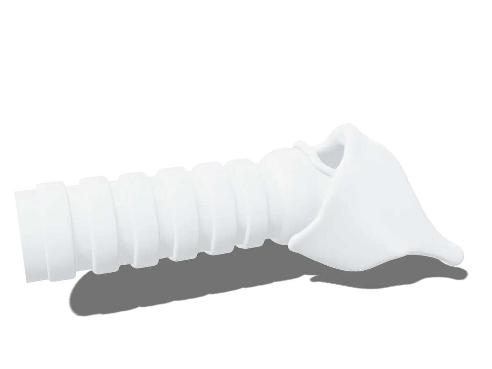

Anatomical landmarks
A one-piece airway with palpable thyroid cartilage, cricoid cartilage and tracheal rings, with separate cricothyrotomy and tracheostomy regions.
PrototypeAvailable first · Cric/Trach Starter Kit
The first CT1 cartridge covers front-of-neck airway access: cricothyrotomy and tracheostomy on one combined cartridge. It's rarely performed in practice, so the skill has to be rehearsed on a schedule.

Features
A one-piece airway with palpable thyroid cartilage, cricoid cartilage and tracheal rings, with separate cricothyrotomy and tracheostomy regions.
PrototypeNothing is printed or marked on the skin. Learners palpate to find the structures they need, as they would on a patient.
Silicone skin over a softer silicone subcutaneous layer, cast around a flexible 3D-printed airway, with a simulated cricothyroid membrane.
Prototype materialsThe cricothyrotomy site and a separate, cuttable tracheal ring region stay distinct, so both procedures can be practiced on the same cartridge.
All cutting happens in the cartridge, and the base stays clean. Cleaning and care instructions to be confirmed.
A sealed fluid strip under the skin for passive bleeding on incision, with no external reservoirs.
In developmentCric/Trach applications
The combined cartridge supports simulation practice for both procedures. CT1 is a training aid and works alongside your program's own curriculum and protocols.

Designed for repeated cricothyrotomy practice in a controlled, simulated setting, so a rarely performed skill can be rehearsed on a regular schedule.

A dedicated tracheal ring region keeps tracheostomy practice separate from the cricothyrotomy site.
Gallery
Renders of the CT1 prototype CAD model. Product photography will replace these once production units are available.
 Cartridge cover
Airway insert
Cartridge
Reusable base
Nameplate
Rubber pad
Cartridge cover
Airway insert
Cartridge
Reusable base
Nameplate
Rubber pad
Exploded view · CT1 with the Cric/Trach cartridge
Colors and finishes shown are illustrative. Production bases are printed in black ASA.
Cric/Trach Starter Kit specifications
Dimensions are measured from the prototype CAD model and may change before production.
| Product type | Simulation task trainer system: reusable base with drop-in skill cartridges |
|---|---|
| Starter kit cartridge | Cricothyrotomy and tracheostomy (combined) |
| Base footprint (with pad) | approx. 109 × 128 mm |
| Assembled height | approx. 55 mm |
| Cartridge | approx. 57 × 110 × 37 mm |
| Weight | To be confirmed |
| Base | 3D-printed ASA, purely mechanical (no electronics, springs or screws) |
| Airway | One-piece flexible 3D-printed insert: thyroid cartilage, cricoid cartilage, tracheal rings (prototype) |
| Tissue | Silicone skin and subcutaneous layers (prototype) |
| Power & fluids | None required; no external tubing |
| Cartridge life | Replace after cutting procedures; uses per cartridge to be confirmed |
| Cleaning | To be confirmed |
| Storage | To be confirmed |
| Intended use | Education and simulation training only. Not for clinical or diagnostic use. |
Documents
For purchasing reviews, curriculum planning and day-to-day care of the trainer.
A one-page summary of the specifications on this page, for purchasing and procurement.
Setting up the base, seating and replacing cartridges, cleaning and storage.
Need something else for a review? Email us and we'll send what's available.
Request a demo
Tell us about your program and the skills you teach. We'll arrange a demonstration and follow up with a quote.